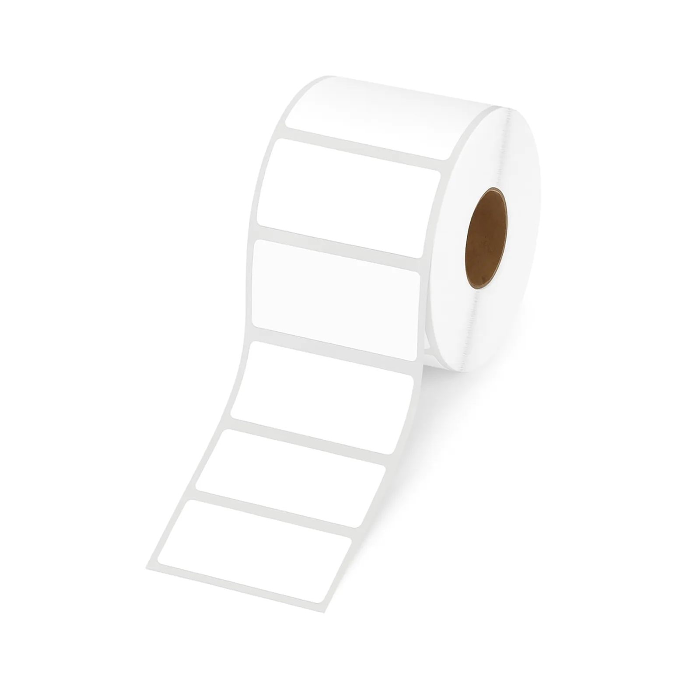
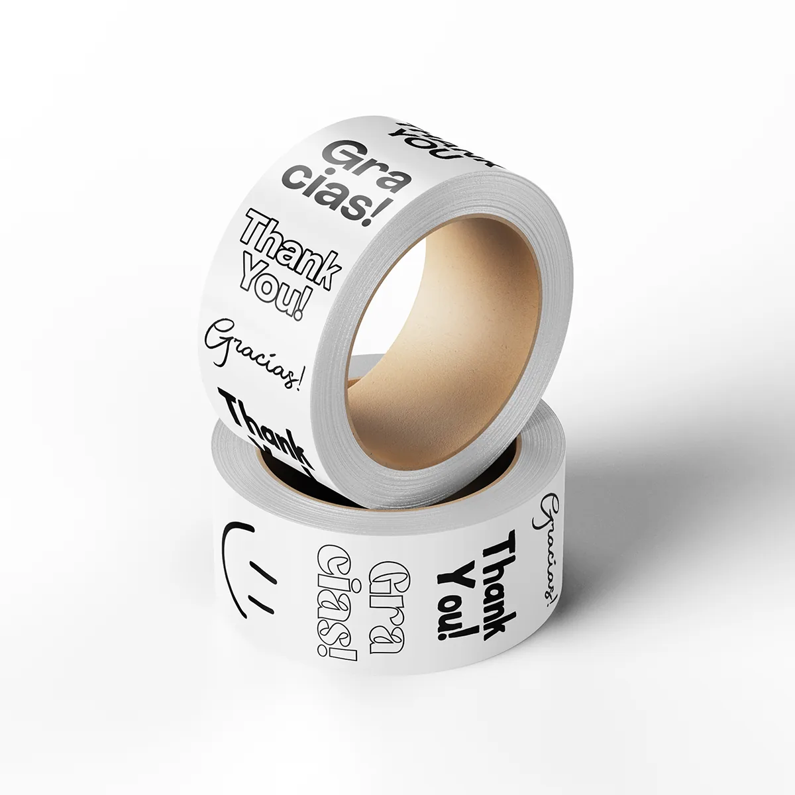
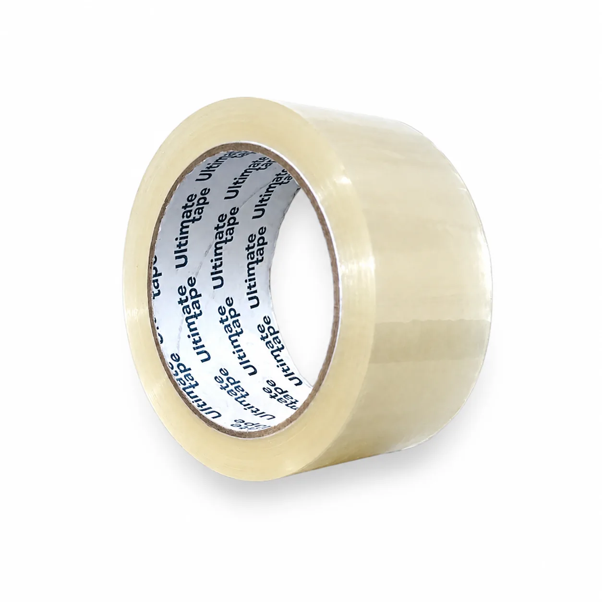

01
Referencia de catálogo
Etiquetas térmicas directas 2 × 1 pulgadas
La ficha publica 1.000 etiquetas por rollo y núcleo de 1 pulgada.

Imagen publicada por DisvaproEtiquetas térmicas, cintas y materiales para preparar pedidos. Empieza con la cantidad real de paquetes.
Guarda tus referencias en una lista local y prepara el siguiente paso. Precios, variantes y existencias se revisan en cada ficha oficial.
La ficha publica 1.000 etiquetas por rollo y núcleo de 1 pulgada.

Cinta impresa de 2 pulgadas por 50 yardas.

Cinta transparente de 2 pulgadas por 90 yardas, 40 micras.
Vende materiales de empaque en línea y recibe solicitudes de etiquetas con medidas, cantidad y arte; publica precios por volumen.
Prueba cantidades y condiciones. Obtén un resumen local para revisar antes de hablar con la empresa.
Datos revisados el 3 de noviembre de 2026. La empresa confirma cualquier condición vigente.
La ficha publica 1.000 etiquetas por rollo y núcleo de 1 pulgada.
Cinta impresa de 2 pulgadas por 50 yardas.
Cinta transparente de 2 pulgadas por 90 yardas, 40 micras.
Sí. El sitio solicita forma, medidas, cantidad y arte.
La web indica que el precio final se confirma después de revisar el arte.
Puede armarse el pedido en la tienda o consultar al canal comercial.
La web menciona transferencia, depósito o tarjeta; confirmar en el pedido oficial.
El sitio publica una ubicación en zona 4 de Mixco, Guatemala.